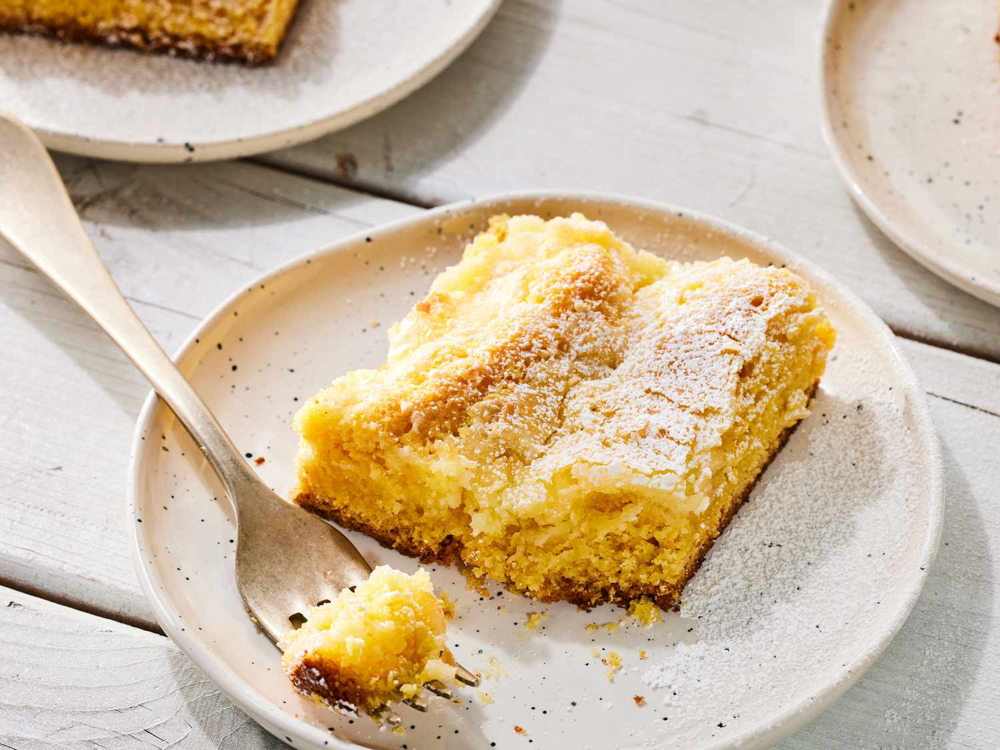

Home
Ooey Gooey Cake
Ooey Gooey Cake

Ooey-est of the Gooey-est
Ooey Gooey Cake is a rich, buttery dessert with a soft, chewy crust and a creamy, custard-like topping. Made with a cake base (often yellow cake mix, butter, and eggs) and a sweet cream cheese mixture layered on top, it bakes into a golden, slightly crisp edge with a soft, “gooey” center. Sweet, indulgent, and melt-in-your-mouth, it;s often dusted with powdered sugar and served as a crowd-pleasing treat for any occasion.
- 1 (15.25 ounce) package yellow cake mix
- 2 eggs
- ½ cup butter, melted
- 1 teaspoon vanilla extract
- 1 (16 ounce) package confectioners' sugar, plus more for dusting
- 1 (8 ounce) package cream cheese, softened
- 2 eggs
- Preheat oven to 350 degrees F (175 degrees C). Grease a 9x13-inch baking dish.
- Mix cake mix and 2 eggs together in a bowl. Add butter and vanilla extract; mix until batter is smooth and thick. Spread batter into the prepared baking dish.
- Beat confectioners' sugar, cream cheese, and 2 eggs together in a bowl until smooth; spread over batter.
- Bake in the preheated oven until sides of cake are pulled away from dish and browned, 25 to 35 minutes. Cool cake completely. Sprinkle more confectioners' sugar over cooled cake.